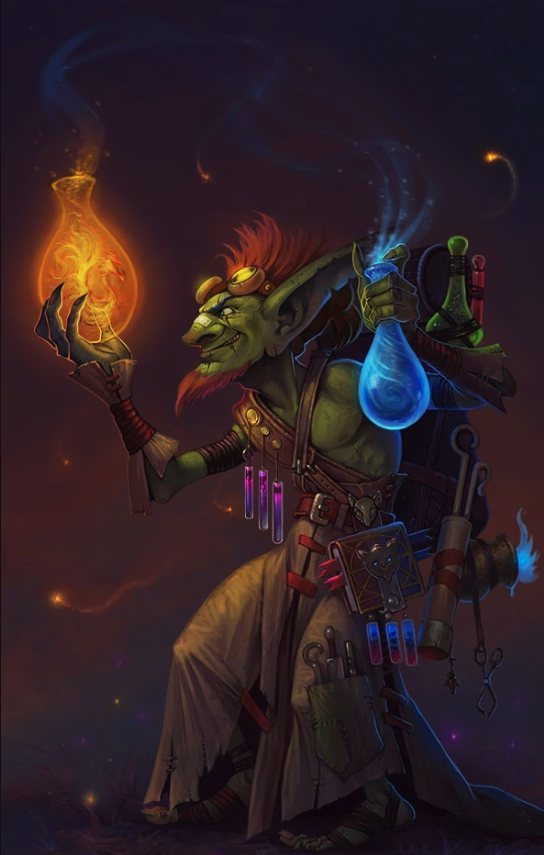

Lohk'Dhar's Diablerie

"Welcome in, patron! Please feel free to browse my wares"
(but don't touch... still don't know where that gnome went...)
- Mandrake Mixture
- Shadowfire Potion
- Gorgon's Breath
- Jet Fuel Firebomb
- Shadow Brew
- Swiftfoot Elixir
- Ironskin Draught
- Goblin's Grog
- Poison Fang Serum
- Troll's Blood Tincture
- Gremlin's Grin
- Flask of Fortitude
- Tonic of Vitality